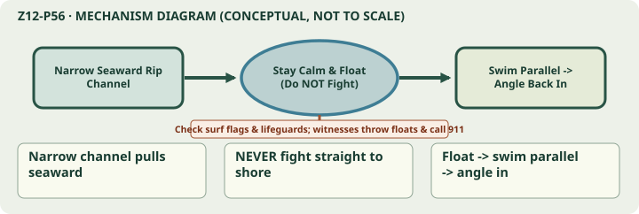

Z12-P56 · Extreme environments · New manuscript
Spot rip-current channels and escape by floating and swimming parallel to shore
Recognize narrow seaward rip currents and survive them without exhausting yourself swimming straight back to shore.
When it applies · Ocean surf beaches, Great Lakes sandbar beaches, piers, jetties and rocky groins.
Equipment · Lifeguarded beach preference, surf forecast check and calm flotation/escape awareness.

Actions
- Spot rip-current visual cues from shore: a narrow gap of darker calmer-looking water cutting through white breaking waves, a tongue of sandy discolored water or foam streaming steadily seaward, or fast currents running right beside piers and jetties (remember many rips look invisible).[X14]
- If caught in a rip current, **STAY CALM AND DO NOT FIGHT DIRECTLY AGAINST IT** toward the beach—rip currents pull you seaward, NOT underwater, and fighting straight back exhausts even strong swimmers quickly.[X14]
- Float or tread water to save breath, swim **PARALLEL TO THE SHORELINE** out of the narrow channel into breaking shoreward waves and then angle back to the beach—or if tired, keep floating/treading and wave and shout loudly for lifeguard help.[X14, T01]
Failure recognition · Panicking and sprinting straight toward the beach against a fast seaward rip channel until lungs give out and drowning occurs.[X14]
Verify · Check daily beach surf flags/rip risk statements, swim near lifeguards and brief every companion on the "float + parallel to shore" rule.[X14, E11, ED]
Stop or change course · High Rip Current Risk warnings, rough pier/jetty surges or unguarded heavy surf require staying completely out of the water—witnesses must call lifeguards/911 and throw flotation rather than swimming in unequipped.[X14, T01, T02]
Evidence and editorial notes
- E11 · NPS · Hike Smart (current web edition)
- Section: Plan your hike; Stay together · Conditions: Groups on hiking routes
Support: Choose a route suited to the group's abilities and hike at a pace that keeps the group together.
Limitations: Fast hikers moving ahead at junctions is a leading driver of preventable separation. · Conflicting evidence: None; aligns with SAR prevention principles.
Editorial note: Core reference for group accountability and pacing cards. · Specialist reviewer: Group leaders and search and rescue
Primary source · checked 2026-11-24 - T01 · American Red Cross · First Aid Steps (current web edition)
- Section: First Aid Steps > Check the scene; check the person · Conditions: Lay responder in United States; assess safety before contact
Support: Check scene safety, responsiveness, breathing and immediately life-threatening conditions.
Limitations: Lay guidance does not replace advanced clinical or rescue protocols. · Conflicting evidence: None; universal first-response opening gate.
Editorial note: Anchors scene-safety-first rule across Z01. · Specialist reviewer: EMS and wilderness medicine
Primary source · checked 2026-11-24 - T02 · American Red Cross · First Aid Steps (current web edition)
- Section: First Aid Steps > Call 9-1-1 · Conditions: Lay emergency response to unresponsiveness, abnormal breathing or severe bleeding
Support: Activate EMS and get needed equipment. Follow dispatcher directions and act within training.
Limitations: Remote locations may delay EMS arrival, requiring sustained stabilization after activation. · Conflicting evidence: None; aligns with NPS-E.
Editorial note: Mandates early emergency activation and dispatcher adherence. · Specialist reviewer: EMS and wilderness medicine
Primary source · checked 2026-11-24 - X14 · NWS · Rip Current Safety (current web edition)
- Section: Rip Current Safety > Recognizing and Escaping Rip Currents · Conditions: Surf beaches, Great Lakes piers/sandbars and ocean coastlines
Support: Rip currents are narrow fast-moving channels pulling seaward; do NOT fight directly against the current—stay calm, float or tread water, swim parallel to the shoreline out of the narrow channel and angle back to shore (or float and wave/yell for help).
Limitations: Fighting a rip current straight toward shore exhausts strong swimmers rapidly and causes drowning. · Conflicting evidence: None; aligns with NOAA-COAST and NWS-RIP-SCI.
Editorial note: Core coastal surf and Great Lakes rip-current card evidence. · Specialist reviewer: Coastal rescue and water safety
Primary source · checked 2026-11-24
Source lineage · NWS rip current safety and NOAA NOS; new manuscript · Classification · New manuscript.